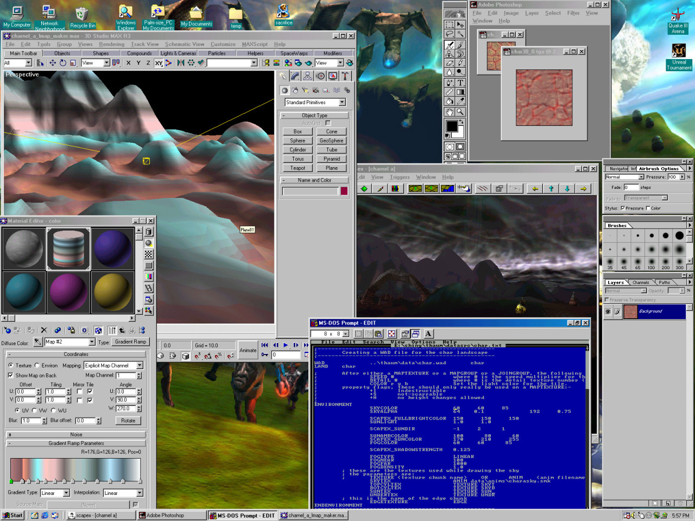
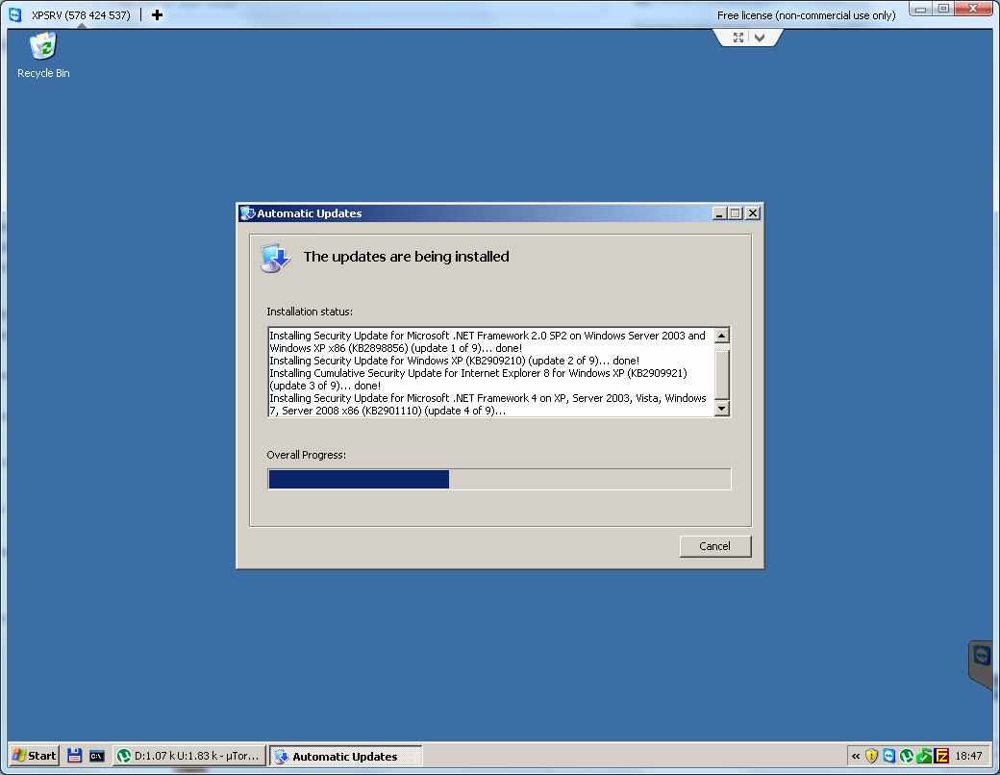
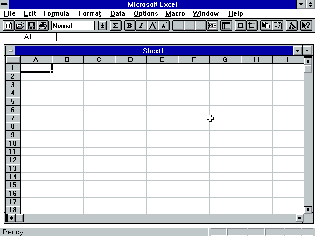
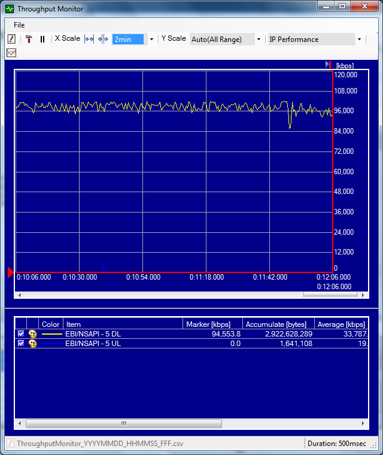

—————————————————————————————————-
CLICK HERE TO SEE IT AT NOT BUTT QUALITY
http://steamcommunity.com/sharedfiles/filedetails/?id=230065711
—————————————————————————————————-
As promised!
I’m a bit late though so I apologise. I’ve had a lot on my plate recently.
So this is our custom train for the full End of the Line release (The train in the trailer was temporary) This new one has over 100 points of articulation. Not all visible in this gif mind you. But it will make sense when you see the final movie. Note things like the functional suspension .
A big shout out to rebbacus who put a lot of work into this asset and did some magical things with springs.
Until next time.




here we can observe the final steps of fixing a bad device wipe.
looking to sell my Oppo Find 5 phone, I happily booted into recovery mode and selected a full wipe, instead of a standard factory reset.
this kills the ROM.
instead of formatting just the /system, /cache and some other partitions, the whole ROM was wiped from the device.
welp.
fiddled around with incompatible drivers downloaded from the manufacturer’s chinese-only website, read a bunch of posts on xda and finally managed to install the correct driver.
at least I can be absolutely sure that the phone cannot be traced back to me
¯\_(ツ)_/¯

bundled data sync programs < total commander ftp directory sync
ahahahahahahaoriginal url http://www.geocities.com/SunsetStrip/Frontrow/7915/
last modified 1998-10-30 22:35:45


original url http://www.geocities.com/SiliconValley/Peaks/1559/
last modified 1998-10-27 22:45:00


An approaching Soyuz space craft as seen from the ISS.

original url http://www.geocities.com/Hollywood/Studio/1682/
last modified 1998-10-23 22:58:57